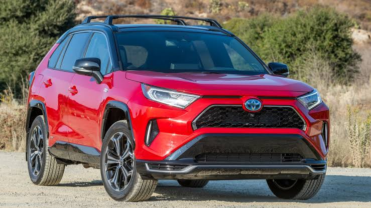

The Toyota RAV4 (Japanese: トヨタ・RAV4, Hepburn: Toyota Ravufō) is a compact crossover SUV produced by the Japanese automobile manufacturer Toyota. Considered as the first compact crossover SUV,[1] it made its debut in Japan and Europe in 1994,and in North America in 1995, being launched in January 1996. The vehicle was designed for consumers wanting a vehicle that had most of the benefits of SUVs, such as increased cargo room, higher visibility, and the option of full-time four-wheel drive, along with the maneuverability and fuel economy of a compact car. The vehicle’s name is an abbreviation of "Recreational Active Vehicle with 4-wheel drive",[4] although not all models come equipped with four-wheel drive.
Manufacturer:TOYOTA
 >